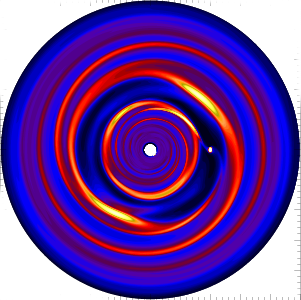
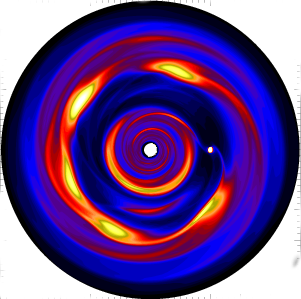
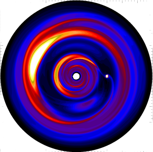

Hello there.
I am an astrophysicist currently working as a post-doctoral fellow at the Canadian Institute for Theoretical Astrophysics in the University of Toronto. Please click the links at the top for more information.
Images above are taken
from 3D hydrodynamic simulations of self-gravitating
protoplanetary disks containing a Jupiter-mass planet. Giant
planets are expected to open gaps in gaseous protoplanetary
disks. Under appropriate conditions these gaps are dynamically
unstable to shear instabilities. These simulations show that the
character of instability depends on disk mass (or more
correctly, the strength of disk self-gravity): a massive disk
(left) develops a `gravitational edge instability'; while
intermediate and low mass disks (middle and right) undergo
vortex formation through the `Rossby wave instability'.
These large-scale
structures are observable with, for example, the Atacama Large
Millimeter/submillimeter Array (ALMA). In fact, circumstellar
disks with large inner dust cavities --- transition disks ---
with lopsided dust distributions have been observed. Recent
examples include the disk around Oph
IRS 48 and LkHα
330. They have been interpreted as
dust-trapping by vortices formed at the outer edge of a gap
opened by one or more unseen giant planets.